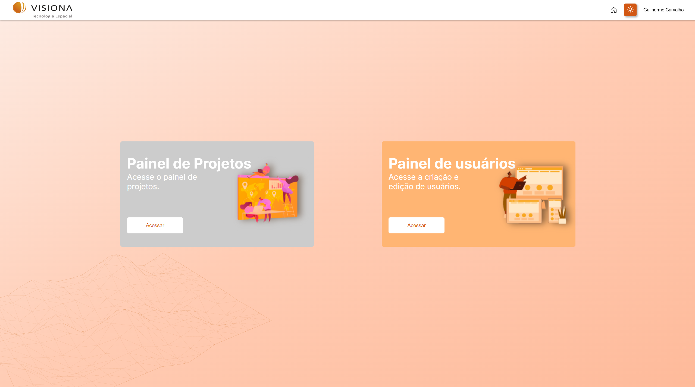
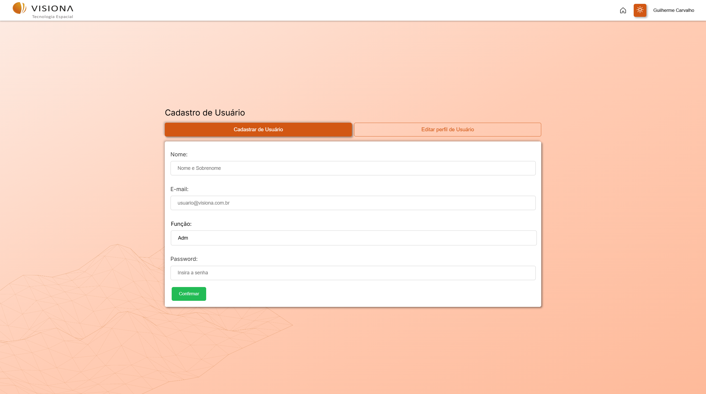
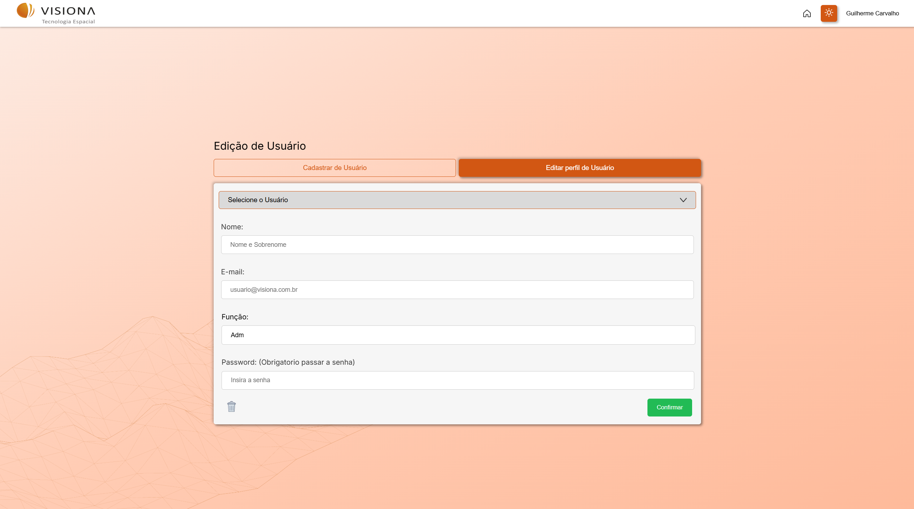
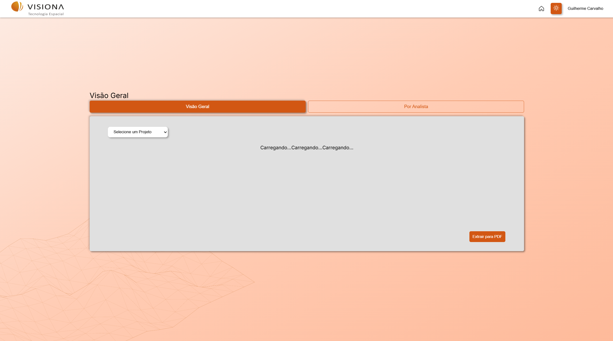
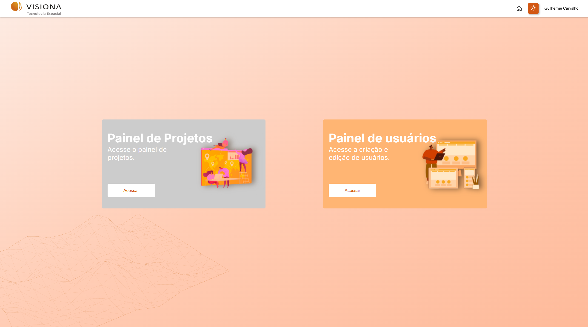
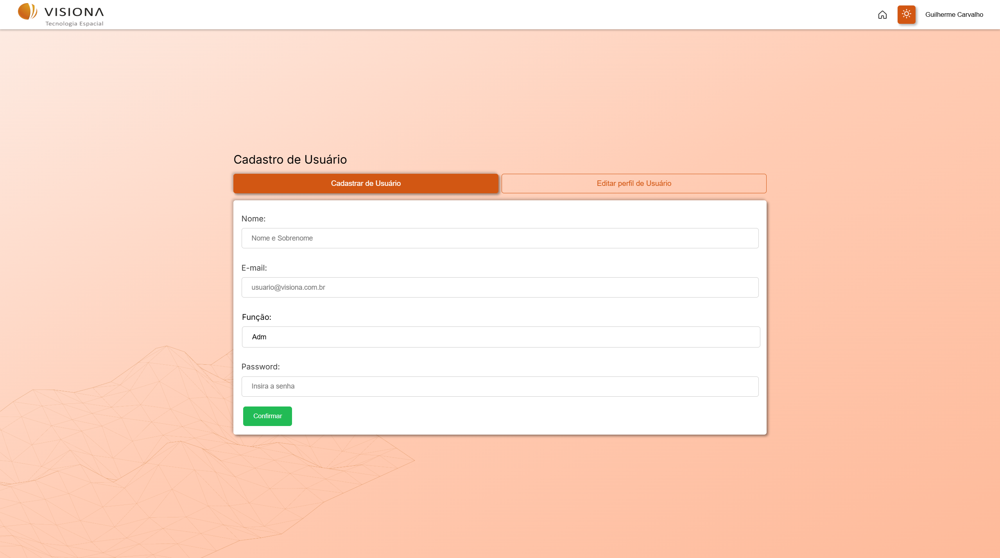
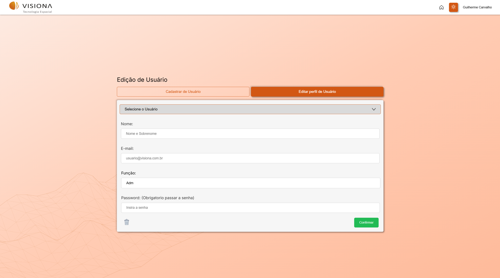
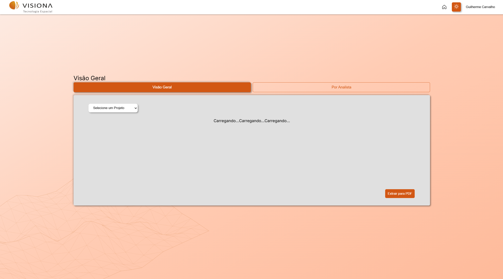

Overview
O Sistema de Gestão de Mapeamento Colaborativo foi um projeto desenvolvido individualmente com o objetivo de atender uma demanda real da empresa Visiona, voltada ao setor de geotecnologias. A solução foi pensada para facilitar e otimizar o processo de mapeamento do uso e ocupação do solo, oferecendo uma plataforma web moderna, intuitiva e eficiente.
A aplicação permite o gerenciamento completo de projetos de mapeamento, desde a criação até o controle de qualidade das informações geradas, integrando usuários com diferentes funções e garantindo a precisão das informações por meio de ferramentas específicas de controle e análise.
Principais Funcionalidades
- Cadastro de projetos e usuários com níveis de permissão (editores e revisores);
- Delimitação de áreas de projeto e distribuição de zonas de mapeamento para cada usuário;
- Upload de polígonos e grades de polígonos para facilitar a organização espacial do projeto;
- Geração automática de estatísticas de mapeamento, qualidade e correções realizadas;
- Filtros avançados e exportação de relatórios detalhados em PDF para análise e tomada de decisão.
Arquitetura e Tecnologias Utilizadas
O sistema foi construído com foco na organização do código, escalabilidade e usabilidade. Toda a aplicação foi desenvolvida utilizando boas práticas de desenvolvimento, mantendo um código limpo, seguro e de fácil manutenção.
- Back-end: Desenvolvido em Node.js com TypeScript, utilizando o padrão MSC (Model-Service-Controller) para manter a separação de responsabilidades. Utilizei Prisma ORM para facilitar a comunicação com o banco de dados MySQL, garantindo eficiência nas operações e consistência nos dados. A autenticação dos usuários foi implementada com JWT e as senhas criptografadas com Bcrypt.
- Front-end: A interface foi construída com React e TypeScript, prezando por uma experiência fluida e intuitiva. Utilizei bibliotecas para facilitar a visualização dos dados, como gráficos estatísticos e manipulação de mapas.
- Relatórios e estatísticas: Integração de geração de relatórios em PDF com dados dinâmicos e estatísticas de mapeamento, revisões e correções realizadas pelos usuários da plataforma.
O projeto foi desenvolvido com foco em atender de forma prática e robusta as necessidades da Visiona, trazendo um sistema colaborativo que melhora a produtividade e o controle dos processos de mapeamento em projetos de geoprocessamento.
 








Tecnologias Utilizadas
- HTML
- CSS
- React
- Node
- TypeScript
- JWT
- GitHub
- GIT
- PostgreSQL
- MSC